7．微分方程组
在弹性理论的研究中，直到现在涉及的一些微分方程是颇为简单的，因为数学家使用了相当粗略的物理原理，而且仍在为掌握更好的原理而奋斗着。然而，在天文学领域中，物理原理，主要是牛顿的运动定律和引力定律，是很清楚的，其数学问题也深刻得多。在研究两个或多个物体在相互吸引作用下的运动时，基本的数学问题是求解常微分方程组，虽然这个问题往往化成求解单独一个方程的问题。
除了个别情况外，有关方程组方面的著作主要是讨论天文学的问题。列出微分方程的基础是牛顿的第二运动定律
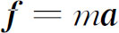
，这里f是吸引力。这是一个向量形式的定律，它表示f的每个分量在该分量的方向上产生一个加速度。欧拉在1750年的一篇论文(40)中给出牛顿第二定律的分析形式：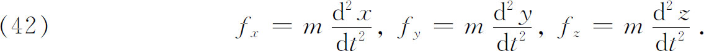
这里他用了固定的直角坐标系。他还指出，对于点状的物体，即质量可以看成集中于一点的物体，m是总质量；而对于分布质量的物体，m是dM。
我们将简略地考虑一下微分方程的建立。假定一个质量为M的物体固定于原点，另一个质量为m的运动体位于（x，y，z）。于是沿坐标轴方向的引力分量（图21.4）为
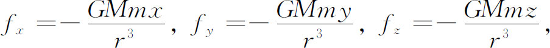
其中G是引力常数，而
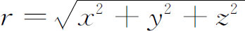
。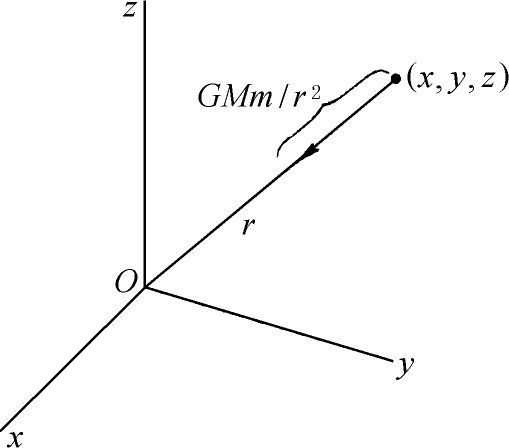
图21.4
容易证明，运动物体保持在一个平面内，这样方程组（42）化为
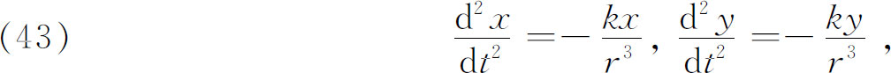
而k＝GM。在极坐标中，这些方程变成
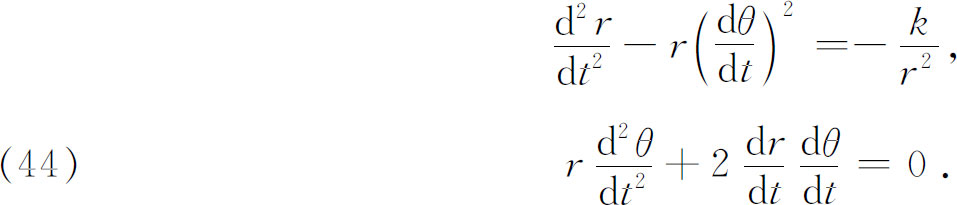
一个物体在另一个固定物体的引力下运动的情况，两个微分方程可以合成一个只含x和y或r和θ的微分方程，这是由于例如第二个极坐标方程可以积分成
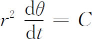
，再把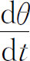
的值代入第一个方程。由此可以弄清楚，运动物体的轨迹是一条以第一个固定物体为焦点的圆锥曲线。如果两个物体在互相吸引下一起运动，那么微分方程就稍有不同了。令m1与m2是两个具有球对称质量的球形物体的质量，而且
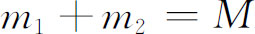
。选取一个固定坐标系（取两物体的质量中心为原点），并且令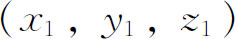
是一个物体的坐标，而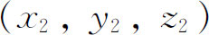
是另一个物体的坐标；设r是距离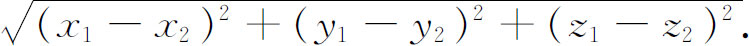
于是描述它们运动的方程组就是
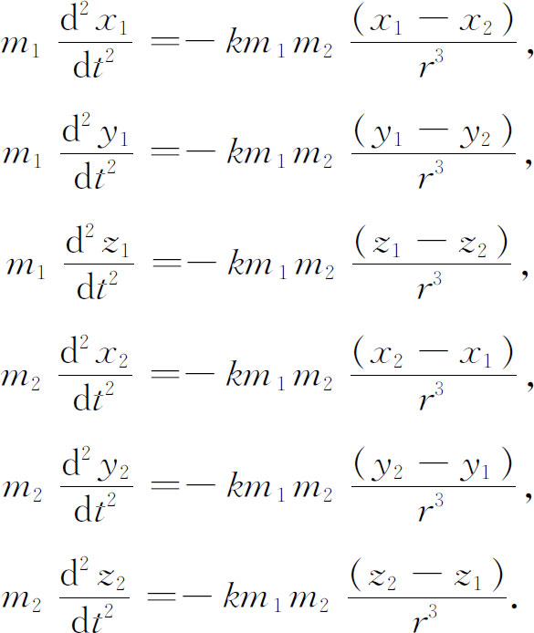
这是六个二阶方程的方程组，它的解要求有12个积分，而每个积分都有一个任意常数。这些常数是由每个物体的初始位置的三个坐标和初始速度的三个分量来确定的。方程可以解出，而且它的解表明，每个物体都是按（以两个物体的质量中心为焦点的）圆锥曲线运动的。
实际上，这个在引力相互吸引下两个球体的运动问题，是由牛顿在《原理》（卷Ⅰ第11节）中用几何方法解决的。然而，分析方面的工作暂时还没有动手进行。在力学方面，法国人追随了笛卡儿的系统，一直到伏尔泰在1727年访问伦敦之后，才宣扬牛顿的体系。甚至在剑桥（牛顿的母校）还继续用笛卡儿的信徒罗奥（Jacques Rohault，1620—1675）的教科书教授自然哲学。另外，17世纪后半期最著名的数学家——惠更斯、莱布尼茨和约翰·伯努利——是反对引力的观念及其应用的。用分析方法研究行星运动是由丹尼尔·伯努利着手进行的，他由于1734年关于二体问题的一篇论文而得到了法国科学院的奖金。欧拉在他的书《行星和彗星的运动理论》（Theoria Motuum Planetarum et Cometarum）(41)中就完全用分析方法了。
设有n个物体，每个都是球形的，而且质量分布是球对称的（密度为半径的函数），那么它们之间的吸引一如它们的质量集中在各自的质量中心一样。令m1，m2，…，mn表示质量，
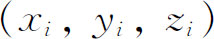
表示第i个质量相对于固定坐标系的可变坐标，令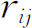
为从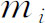
到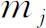
的距离。于是作用在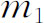
上的力沿x方向的分量为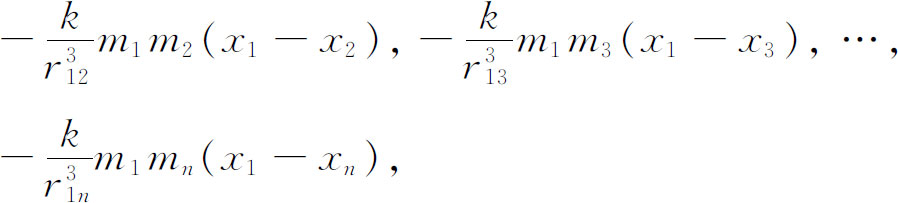
对于沿y方向与z方向的分量，有类似的表达式。每个物体上都有这种力的分量作用着。
于是，第i个物体的运动方程是
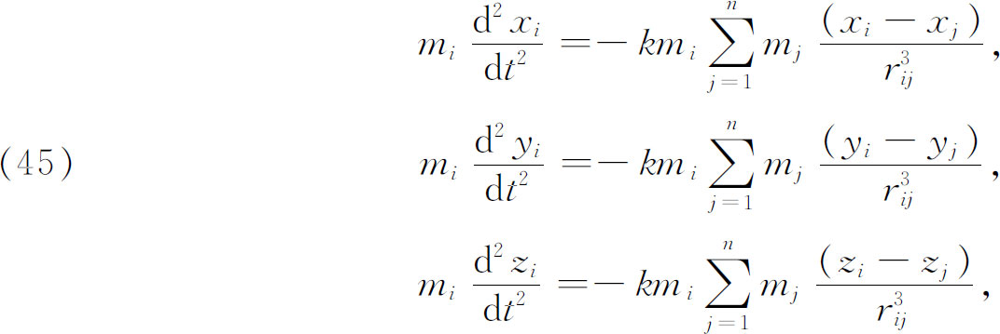
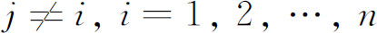
。共有3n个二阶方程。原点可以取在n个物体的质量中心或其中的一个物体上，例如在太阳上。共有6n个积分，其中10个可以相当容易地找到，这10个积分就是我们在一般问题中所知道的仅有的积分。n体问题，实际上甚至三体问题是不能精确解出的。因此对这个问题的研究已经选择了两个一般的方向。第一个方向是探索人们可以导出什么样的，至少可以阐明运动的定理。第二个方向是找近似解，在某个可以利用初始资料的时刻以后的一个时期内，这种近似解可能是有用的，这就是大家知道的摄动法。
第一种类型的研究，对n体质量中心的运动，产生了几个定理，由牛顿在他的《原理》中给出。例如，n体质量中心在一直线上做匀速运动。上面提到的10个积分，它们是所谓运动守恒律的推论，也算是第一种类型的定理。这些积分，欧拉是知道的。对于三体问题的一些特殊情形，还有某些精确的结果，这些结果应归功于天体力学大师之一——拉格朗日。
拉格朗日（1736—1813）是法国和意大利血统的人。在少年时，他对数学没有好印象，但是还在学校的时候，他读了哈雷写的关于牛顿微积分的功劳的一篇短文，而变得热爱这门学科了。在19岁的时候，他就成为他的故乡都灵的皇家炮兵学校的数学教授。他很快对数学做出大量的贡献，甚至在早年时，他已被公认为那个时代的最大数学家之一。虽然拉格朗日的工作涉及许多数学分支——数论、代数方程论、微积分、微分方程和变分法——与许多物理分支，但是他的主要兴趣是把引力定律应用于行星运动。他在1775年说过：“算术研究是最叫我伤脑筋的，而且恐怕是最少价值的。”阿基米德是拉格朗日崇拜的偶像。
拉格朗日最有名的著作，他的《分析力学》（Mécanique analytique，1788；第二版，1811—1815；他死后又出一版，1853）扩大并完善了牛顿关于力学的工作。拉格朗日有一次曾经发牢骚说，牛顿是一个最侥幸的人，因为只有一个宇宙而牛顿已经发现了它的数学规律。然而，拉格朗日在使世界了解牛顿理论的完美性方面也有功绩。虽然他的《分析力学》是一本科学经典，并且对常微分方程的理论与应用也很重要，但是拉格朗日却难于找到一个出版者。
在三体问题中得到的一些特殊精确解，是拉格朗日在1772年一篇得奖论文《论三体问题》（Essai sur le problème des trois corps）(42)中给出的。这些解中，有一个是说这些物体能够作这样的运动，使得它们的轨道是同时描出的三个相似椭圆，而且以三物体的质量中心为共同的焦点。另一个是，假定三个物体从一个等边三角形的三个顶点开始运动，那么它们就好像粘住在这个三角形上运动着，而这个三角形本身围绕着三物体的质量中心转动。第三个是，假定三物体是从一直线上的初始位置投入运动的，那么在适当的初始条件下，它们将继续固定在这一直线上，而这条直线在一平面上围绕物体的质量中心转动。对于拉格朗日来说，这三种情况是没有物理实在性的，然而那个等边三角形的情况在1906年被发现适用于太阳、木星和一个名叫阿喀琉斯（Achilles）的小游星。
关于n体问题的第二类问题，如已经指出的，是从事于近似解或摄动理论的研究。两个球形的物体，在它们的引力相互作用下，是沿圆锥曲线运动的，称这种运动为非摄动的。对这种运动的任何偏离，不管是位置的还是速度的，都称为被摄动的运动。如果两个球体所处的介质对运动具有阻力，或者如果两个物体不再是球形的，比如说是扁球形的，或者如果除这两个物体外还牵涉更多的物体，那么这些物体的轨道将不再是圆锥曲线了。在应用望远镜以前，摄动现象是不引人注目的。在18世纪，计算摄动成为一大数学问题，而克莱罗、达朗贝尔、欧拉、拉格朗日以及拉普拉斯都做出了贡献。在这个领域中，拉普拉斯的著作是最杰出的。
拉普拉斯（1749—1827）出生于诺曼底（Normandy）的博蒙（Beaumont）镇，他的父母家境还算不错。拉普拉斯在16岁那年就进了卡昂（Caen）大学学习数学，当时他很有可能成为一个牧师。他在卡昂度过了5年，那时他写了一篇关于有限差分的论文。在完成他的学业后，拉普拉斯带着几封介绍信到巴黎去找达朗贝尔，遭到达朗贝尔的回绝。后来拉普拉斯向达朗贝尔写了一封信，阐述了力学的一般原理，这回引起了达朗贝尔的重视而召见他，并给他取得巴黎军事学校数学教授的职位。
拉普拉斯还在青年时代就发表了丰硕的成果。巴黎科学院在他1773年入选后不久所写的一份报告书中指出，还没有一个如此年轻的人就在这样多方面和困难的主题上提出如此多的论文。在1783年，他接替了军事考试委员贝祖（Etienne Bezout），而且考试了拿破仑（Napoleon）。在革命期间，他是度量衡委员会的委员，但是后来与拉瓦锡（A．L．Lavoisier）还有其他人由于不是好的共和人士而被开除了。拉普拉斯就隐居在巴黎附近的一个小城市默伦（Melun），在那里他写了他有名的通俗的《宇宙系浅说》（Ex position du système du monde，1796）。革命后，他是师范学院的教授，当时拉格朗日也在那里教书。拉普拉斯在政府的几个委员会里工作，后来历任内政部长、议会委员和议会大臣。拉普拉斯虽然由拿破仑封为伯爵，但是他在1814年投票反对拿破仑，而依附了路易十八（LouisⅩⅧ）。路易封他为法兰西的侯爵与贵族。
在参与政治活动的这些年月里，他继续从事科研工作。在1799年与1825年期间，出版了他的五卷本《天体力学》（Mécanique céleste）。在这部著作中，拉普拉斯给出了太阳系力学问题的“完全的”分析解。他尽可能少用观察资料。《天体力学》把牛顿、克莱罗、达朗贝尔、欧拉、拉格朗日以及拉普拉斯自己的结果和发现，统一成一个整体。这部杰作是如此的完全，以至他的最接近的后继者不能再添加什么了。恐怕唯一的缺点是，拉普拉斯经常不交代他的结果的来源，给人的印象好像都是他自己的。
1812年，他出版了《概率的分析理论》（Théorie analytique des probabilités）。第二版（1814）的序言是一篇通俗的短文，题为《关于概率的哲学浅说》（Essai philosophique sur les probabilités），其中有一段著名的议论，大意是说，世界的未来是完全由它的过去决定的，而且只要掌握了这个世界在任一给定时刻的状态的数学信息，就能预报未来。
拉普拉斯在数学物理中有许多重要的发现，其中有一些我们将在以后几章中谈到。事实上，凡是有助于解释世界的任何事情，他都感兴趣。他研究过流体动力学、声波的传播和潮汐。在化学方面，他的关于物质液态的著作是经典的。他的关于在毛细管中使水上升的表面张力的研究和在液体中内聚力的研究，都是重要的。拉普拉斯与拉瓦锡设计了一个测量热量的冰块量热计（1784），测定了许多物质的比热，对他们来说，热仍旧是一种特殊的物质。不过，拉普拉斯的大半生致力于天体力学的研究，他在1827年逝世。据说他的遗言是：“我们知道的，是很微小的；我们不知道的，是无限的。”——可是德摩根（Augustus de Morgan）说，那遗言是“人们了解的只是幻象”。
拉普拉斯与拉格朗日有经常的联系，但是他们的个性与工作都是不相同的。拉普拉斯的虚荣心使他不能充分肯定他认为是他对手的工作；事实上，他利用了拉格朗日的许多概念而不作声明。通常在一同谈到拉格朗日和拉普拉斯时，总是要对拉普拉斯的个人品德进行批评。拉格朗日是数学家，他写作时很精心，写得很清楚，很优美。拉普拉斯创造了许多新的数学方法，它们后来发展成为数学的分支。但是，他从来不关心数学，除非它有助于研究自然。当他在物理学的研究中碰到一个数学问题时，他解决得几乎是很随便的，并且仅仅说“容易看出……”，从不耐心解释他是如何得出结果的。可是，他也承认，要重新建立他自己的结果是不容易的。美国数学家与天文学家鲍迪奇（Nathaniel Bowditch，1773—1838）翻译了《天体力学》五卷本的四卷以及附加的说明。他说，只要一碰见“容易看出……”这句话，我就知道总得花几个小时的苦功夫去填补这个空白。的确，拉普拉斯对数学是不耐烦的，而爱好应用。他对纯粹数学不感兴趣，至于他在这方面的贡献乃是他在自然哲学中的伟大著作的副产品。数学是一种手段，而不是目的，是人们为了解决科学问题而必须精通的一种工具。
在与本章主题有关的范围内，拉普拉斯的工作是处理行星运动问题的近似解。用近似方法得到有用解的可能性在于下列原因。太阳系是由太阳主宰的，太阳占整个系统总质量的99．87％。这就是说，由于行星相互之间的摄动力是微小的，所以行星的轨道近乎椭圆。然而，木星占行星总质量的70％。又地球的卫星相当接近于地球，这样它们就互相影响，因此必须考虑摄动。
三体问题，特别是太阳、地球和月球，在18世纪研究得最多，一部分原因是由于它是二体问题之后接着要考虑的一步，另一部分原因是由于航海需要对月球运动有精确的认识。在太阳、地球和月球的实例中，可以利用某些有利的事实，即太阳与其余两个星球离得较远，从而可以认为它对地球和月球之间的相对运动只产生微小的影响。在太阳和两个行星的实例中，通常认为一个行星摄动了另一个行星绕太阳的运动。如果其中一个行星是微小的，那么它对另一个行星的引力效应可以忽略，但是必须考虑大行星对小行星的引力效应。三体问题的这些特例叫做受限制的三体问题。
三体问题的摄动理论最先应用于月球的运动，这是牛顿在《原理》的第三卷中用几何方法作出的。欧拉与克莱罗试图求得一般三体问题的精确解而抱怨困难，因而只得用近似方法。这里克莱罗用微分方程的级数解作出了第一个实在的进展（1747）。然后他及时地把他的结果应用到哈雷彗星的运动。在1531年、1607年和1682年曾经观察到这颗彗星，他预计在1759年彗星将出现在它绕地球的轨道的近地点上。克莱罗计算了由木星和土星的引力所产生的摄动，并且在1758年11月14日在巴黎科学院宣读的一篇论文中预报，1759年4月13日彗星将出现在近地点。他附带说明，精确的时间不能肯定，但不出一个月的范围，这是因为木星和土星的质量还知道得不很精确，而且还有别的行星所引起的微小摄动。在3月13日，彗星到达了它的近地点。
为了计算摄动，产生了所谓的元素变值法或参数变值法——或积分常数变值法，这是一个最有效的方法。我们将只限于讨论它的数学原理，所以不考虑完整的物理背景。
数学上，三体问题的参数变值法可追溯到牛顿的《原理》。在研究月球绕地球运动而得到椭圆轨道后，牛顿考虑了月球轨道的变值，算出太阳对它的影响。约翰·伯努利在1697年的《教师学报》(43)上用这个方法去解个别情况下的非齐次方程，而欧拉在1739年用它来研究二阶方程
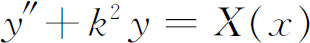
。欧拉在1748年的一篇论文(44)中最先用它去研究行星运动的摄动，这篇论文研究了木星和土星的相互摄动，获得了法国科学院的奖金。对这个方法，拉普拉斯写了许多论文(45)。这个方法是由拉格朗日在两篇论文中(46)充分发展的。单个常微分方程的参数变值法由拉格朗日应用到n阶方程
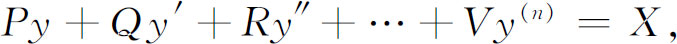
其中X，P，Q，R，…，V是x的函数。为了简单起见，我们将假定方程是二阶的。
在X＝0的情况，拉格朗日已知通解是
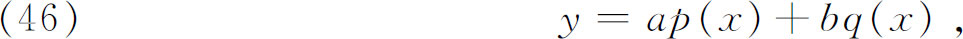
其中a与b是积分常数，而p与q是齐次方程的特殊积分。接着，拉格朗日说，让我们把a与b看作x的函数。因而
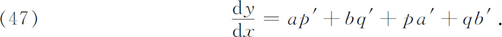
拉格朗日令
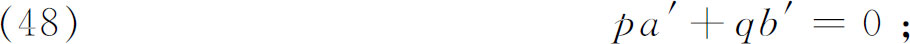
就是说，他让y′中由a与b的变值而引起的那一部分等于0。由（47），根据（48），有
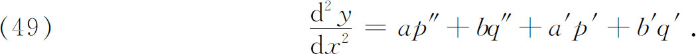
如果方程高于二阶，拉格朗日再令
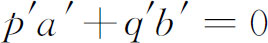
，并且求出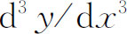
。由于在我们这个情形，方程是二阶的，他就保留了（49）中的全部项。他接着把（46），（47）和（49）给出的
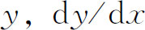
和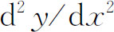
的表达式代入原方程。由于（46）是齐次方程的解，而（48）扔掉了由a与b的变化而引起的那些项，所以在代入后留下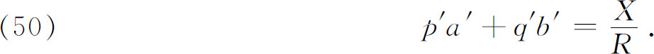
这个方程与方程（48）组成了关于未知函数a′与b′的代数方程组。从这方程组可以解出a′和b′，用已知函数p，q，p′，q′，X与R表示。然后可用积分求得a与b，或者至少可以化成积分。以这些a与b代入（46），就得到原来的非齐次方程的一个解。这个解与齐次方程的解一起组成非齐次方程的通解。
拉格朗日以更一般的形式处理了参数变值法(47)，而且指出，这个方法可以应用于许多物理问题。在1808年的一篇论文中，他把这个方法应用到由三个二阶方程组成的方程组。技巧上自然更复杂了，但是基本思想还是把相应的齐次方程的六个积分常数看成是变化的，并确定它们，使表达式满足非齐次方程组。
拉格朗日与拉普拉斯在他们正在发展参数变值法期间以及其后，写了一些解答太阳系基本问题的读物。拉普拉斯在他的无与伦比的著作《天体力学》中，总结了他们工作成果的概况：
在这本著作的第一部分，我们给出了物体平衡与运动的一般原理。这些原理对天体运动的应用，通过几何的［分析的］论证，不必作任何假设，就导出万有引力定律，而重力的作用与抛射物运动则是这个定律的特例。然后我们考虑了服从于这个伟大自然定律的体系，用奇妙的分析得到了它们的运动和图形的一般表达式，以及覆盖在它们表面上的流体振动的一般表达式。从这些表达式，我们推断出所有大家知道的潮汐现象、纬度的变化与地球表面的引力、岁差、月球的引力作用，以及土星环的形状与转动。我们还指出这些环永远停留在土星赤道平面上的理由。而且从同一个引力理论，我们还推出行星运动的主要方程，特别是木星和土星的方程，木星与土星最大的均差有一个900年以上的周期(48)。
拉普拉斯总结说：大自然安排的天体布局，“永远根据同一原理，这些原理在地球上如此奇妙地适合于个体的生存和物种的永存”。
一方面求解微分方程的数学方法有了改进，一方面关于行星的新的物理事实有所发现，整个19世纪与20世纪，在拉普拉斯提到过的各种课题方面，特别是关于n体问题和太阳系的稳定性方面，人们为了求得更好的结果而做出了努力。